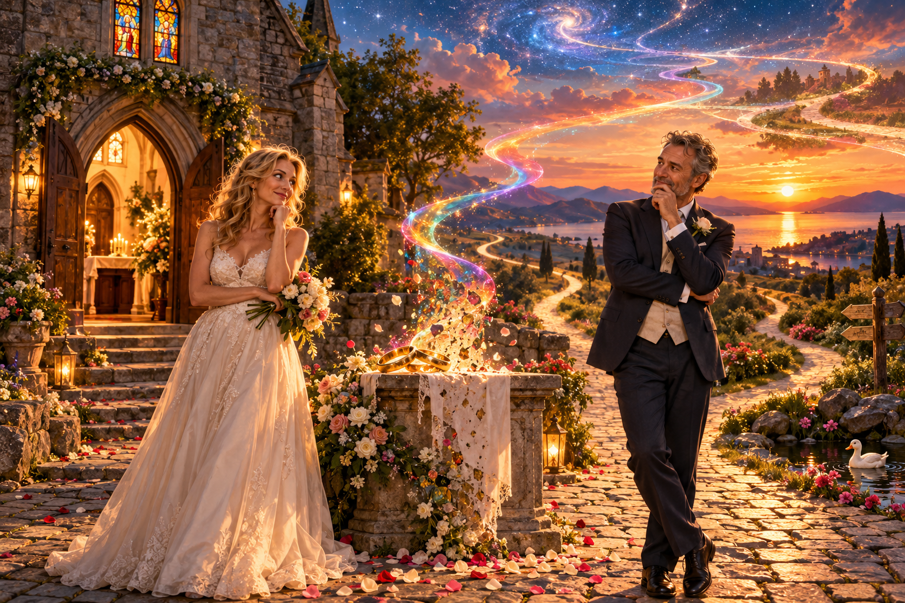

The purpose of a bonded male and female relationship is to,
partly, fulfill our deepest physical,
mental and emotional - needs and desires:
with this in mind can we construct a viable cause for all the divorce laws
and the anguish of financial,
asset and personal separation,
and disgruntled,
weepy,
dysfunctional kids - as in most countries,
today,
in the western way,
dissolution of marriage has become quite a popular norm,
catches on like a house-on-fire
(Or was that a home?).
Now for some reason you see:
which evades me:
men and women cannot find true bliss with just:
The One,
more an on-going saga
or a serial of people-thrillers;
that is not meant as a fairytale killer;
it is the ebb and flow of our modern digital age:
to point,
then click from one to-the-other,
How can this be?
When it started by falling-deeply-in-love,
so helplessly,
with chocolates,
flowers,
candlelight dinners and passionate,
romantic kisses and then we rush down the aisle,
with a profound face and proud smile
and gesture before God,
priest’s and our families best
and encourage our good friends:
come to celebrate at our behest,
as we openly declare our Love for an eternity
or to one or the other departs from this brief and mortal coil:
and then would you conceive it?
I have no baby oil!
Now what happens next?
After we have fallen-in-love,
avowed to the world-and-the-rest-of-his-wives
that devoted we would be:
in sickness and in health,
good-times and bad-times,
for richer and poorer:
then the rose coloured glasses fall off their highly unstable,
wobbly,
pedestal perch,
with a crashing din and lurch;
as we begin to find out,
that our spouse isn’t the great lover,
that we have been shouting about,
no its seems that we fallen foul to a bio-chemical blind-fold
and nature’s sticky web to secure the survival of the human race:
quintessentially; yours and my DNA:
What a dismay!
Can you believe that it is all a big,
slick biological trick?
And a stunt from a Deity – now lost in celestial space!
I mean what is Creation if not Perfection?
Then why are all the humans in such a booked-up condition?
“Freewill”,
his or her Majesty,
would say, that is great my Omnipotent Friend:
With all these hormones spinning around how can you expect me or thee to be faithful?
With so much variety and varied multi-dimensional feelings
and sexual responses to every set of competent genes.
I state: You create this potential and fun and then bequeath:
“NO! NO!– Life is meant to be a chore
and you will just have to suppress all this excitement
and resolve it with expensive psychobabble,
and continual confession of what a sinner you are,
especially after made in my:
Grand Image, so I should know ALL!
What a blessing it is to be ME!”
No not really!
(The answer to the previous,
devious,
mischievous question,
just cast your eye back;
and you’ll know I am no lying Jack,
just keeping you on track.)
I can not buy,
neither,
that Darwin’s mumbo jumbo,
as its True Love or Naught:
that’s it I’m off - to try it again and again,
‘till I get it right: either in this life
or whatever God’s got planned in His or Her very, very mysterious ways!
Perhaps in my next life I will be a duck whose life is about real monogamy;
and when alone will read a good flying book to ensure my species are well cooked:
with orange sauce;
it is tasty you see!
And maybe this is the root of the beast:
as we expect to feast on just one other adult for life
and more often or not,
our own inner child has not grown-up,
‘tis true when at fifty or sixty,
our own private demons are crafting subconscious sabotage
and you will not know which grass is greener
or morally cleaner.
Or what shade you actually like: pastel, dark or regent – Oh!
Forget that - I want an infinitely coloured Rainbow!
With all shades of glory and not anything less (than) my dear (dry)
All Powerful Soul Mate!